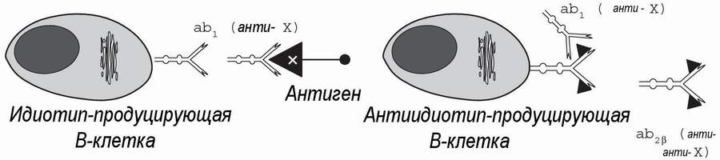
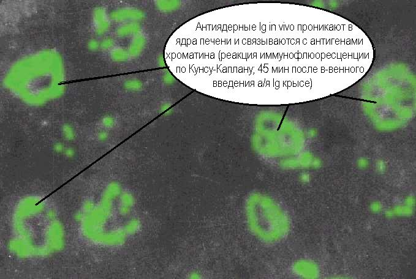

Регуляция иммунного ответа
Все варианты иммунного ответа регулируемы. Это означает, что величина (и качество) любого варианта иммунного ответа отражает существующий баланс влияний, направленных на его расширение, и других механизмов, направленных на снижение его активности. Актуальность этого вопроса связана с тем, что большое количество иммунологических нарушений, в частности, аутоиммунные болезни и аллергия имеют дизрегуляторный характер.
Некоторые формы регуляции заложены генетически и опосредуются продуктами ГКГС. На состоянии иммунорегуляторных механизмов отражаются возрастные, половые, конституциональные различия, характер питания индивида и прочие факторы. Большое значение имеют доза и путь попадания антигена, его физическое состояние, его способность длительно персистировать внутри клеток или, напротив, отсутствие у него такой возможности. Эти различия, особенно последнее, могут определять, будет ли иммунный ответ, в основном, опосредован антителами, или в нем будут играть главенствующую роль клеточные механизмы. Один и тот же антиген, инъецированный внутрь АПК или находящийся в окружающей клетку среде, попадает в разные компартменты АПК, по разному процессируется и представляется в контексте различных гликопротеидов ГКГС, что ведёт к преобладанию разных форм иммуногенеза (см. также выше - раздел “Цитокины и белки ГКГС - факторы коммуникации иммунной системы.”)
Все эти обстоятельства могут также оказывать влияние на классовый спектр Ig, авидность антител, их титр и продолжительность иммунного ответа - в каждом конкретном случае.
Агентами регуляции иммунного ответа выступают антигены, антитела и цитокины. Наиболее плодотворным подходом в области изучения механизмов регуляции иммунного ответа оказалась сетевая теория Н.Ерне (1974).
Иммунный ответ подвержен аутоиммунной саморегуляции. Ерне сформулировал сетевую теорию для объяснения данного феномена. Согласно этой теории, каждый антигенный рецептор (идиотип), как на Т-, так и на В-клетках, способен стимулировать продукцию комплементарных антиидиотипических антител, которые, в основном, снижают продукцию первичных идиотипов. Практически, система антиидиотипических антител впервые была экспериментально получена в СССР Л.Н.Певницким, А.И.Фонталиным и Г.Н.Крыжановским (1960), на модели столбнячного токсина и антитоксина, а чуть позже - во Франции - Ж.Удэном (1966).

Например, антиген Х провоцирует продукцию анти-Х, и оба, анти-Х и В-клетки,производившие анти-Х, несут идиотип анти-Х. Это, в свою очередь, стимулирует другой клон В-клеток к продукции антител к идиотипу анти-Х, т. е. анти-анти-Х. Последние антиидиотипические антитела могут иметь структурное сходство с первоначальным антигеном Х (так как оба должны иметь сродство к анти-Х), хотя это и не обязательно, а наступает лишь при совпадении идиотипа и паратопа анти-Х. Антиидиотип анти-анти-Х, воспроизводя пространственную структуру и связывающие способности лиганда Х, создает его “внутренний иммунологический образ” (Ж.Линдеманн,1979). Антиидиотипические антитела являются частным случаем антирецепторных антител, большего класса, включающего, например, антитела к инсулиновым рецепторам или к рецепторам тиротропного гормона. В случае антиидиотипических антител к гормону, антигеном служит рецептор. Доказаны регуляторные эффекты таких антител в экспериментах in vitro и in vivo, а также в клинике при ряде аутоиммунных дизрегуляторных заболеваний (Г.Голтон, М.Грин, 1986). Существуют данные, показывающие что в сеть идиотип-антиидиотипических взаимодействий при патологии и в норме вовлечены не только распознающие молекулы иммунной системы, но рецепторы и биорегуляторы соматических клеток организма, а также распознающие элементы хроматина (В.Г.Нестеренко 1984; А.Я.Кульберг 1986; А.Ш.Зайчик и соавт. 1988). Сеть не бесконечна, а замкнута на себя, ибо антиидиотипы изоморфны или даже идентичны по пространственной структуре антигену, а гипотетические “анти-анти-антитела” аналогичны антителам 1-го порядка (К.Раевски, А.Такемори, 1982).

Согласно теории иммунологической сети, иммунная система способна по идиотип- антиидиотипическому принципу вырабатывать функционально активные информационные копии многих эндогенных и экзогенных биорегуляторов , причем, не только белковых (Э.М.Смит, Дж. Э.Блэлок 1986; Й.Шехтер 1988, А.Стросбер и соавт.; 1983; А.Ш.Зайчик и соавт. 1988). Подобные копии участвуют в нормальной регуляции роста и функций клеток, но способны и вызвать нарушения клеточной пролиферации и деятельности при аутоиммунных заболеваниях. По современным данным ауторегуляторные идиотип-антиидиотипические взаимоотношения базируются не только на иммуноглобулиновых рецепторах В-лимфоцитов и антителах, но и на иных взаимно комплементарных структурах, например, идиотипических и антиидиотипических Т-клеточных рецепторах (Г.Голтон, М.Грин 1986). Гомеостатическая регуляция разнообразия иммуноглобулинов также предусматривает механизмы антиидиотипических воздействий. В наследуемых V-генах постоянно происходят соматические мутации, а, следовательно, должны возникать и аутореактивные клоны. Аутоантиидиотипические взаимодействия приводят к необратимому супрессированию мутантных идиотипов и к ограниченному во времени подавлению наследуемых, так как процесс дифференцировки будет способствовать восстановлению неизмененных идиотипов (А.Я.Кульберг 1986). С точки зрения сетевой теории, иммунная система выступает, как создатель иммунологических образов антигенов, переданных структурой антиидиотипов. Эти иммунологические образы могут сохраняться вместе с вырабатывающими их клонами и поддерживать иммунный ответ в отсутствие антигена. Более того, если антигеном служит гормон или лекарство, то атрибутивное свойство иммунной системы создавать аутоантиидиотипы превращается в способность вырабатывать, при определённых условиях, иммунологический аналог любого сигнала и эндогенный образ любого лекарства! Выше уже приводились примеры, доказывающие принципиальную реальность этих интригующих соображений. Древняя идея панацеи реализована эволюцией в виде иммунной системы, позволяющей копировать сигналы и антисигналы в виде циркулирующих и поверхностных молекул. Один из наиболее поразительных экспериментов, доказывающих это - получение Ц.Елазаром и соавторами моноклональных антиидиотипических иммуноглобулинов против антител к галоперидолу, имитирующих действие этого лекарства на дофаминовый D2- рецептор (1988).